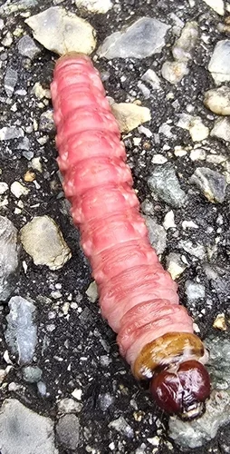
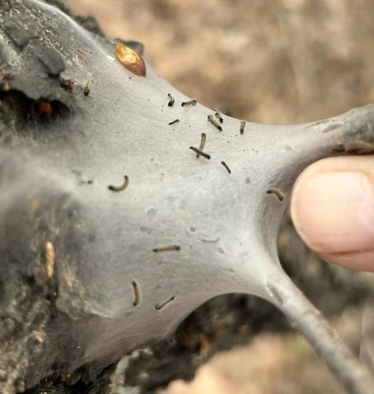
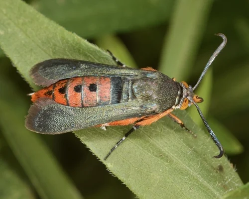
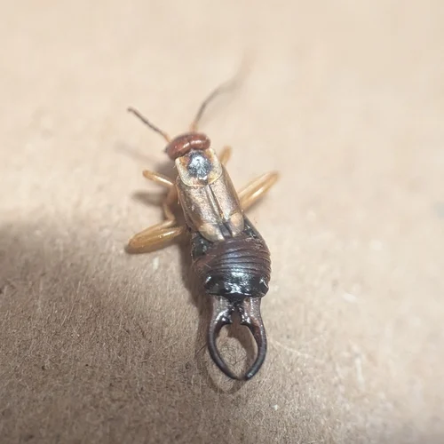

Plant pests

Caterpillars chewing foliageFollow fresh bites to find the larva; inspect folded leaves and the backs of stems.

Pear-shaped insects on shootsCheck young shoots and buds for clusters, cast skins and sticky foliage.

Shell-like bumps on stems or leavesInspect bumps along veins and stems with a lens and distinguish surface shells from the plant tissue.

Oval beetles and chewed leavesPhotograph the wing covers, body shape and the actual feeding site.

Cottony insects in leaf jointsLook into leaf axils for wax-coated insects and sticky honeydew.

Tiny mites and fine webbingInspect the underside for fine webs and moving dots, and the upper surface for pale stippling.

Longhorn beetles and holes in woodInspect wood for holes, debris and declining branches. A visiting adult alone does not confirm larvae in the tree.

Snails and slime trailsOn a damp evening, check pot rims, leaf undersides and nearby hiding places.

Snouted beetles and notched leaf edgesCheck for semicircular notches and inspect plants after dusk for snouted beetles.

Slender insects on buds and leavesTap a bloom gently over white paper and inspect slender insects with a lens. Look for scarring on petals.

Lace-winged bugs and pale stipplingLook underneath stippled leaves for tiny lace-patterned wings and dark specks.

Wedge-shaped jumping insectsDisturb a leaf lightly and watch for sideways jumping. Photograph the body and faded areas of the leaf.

Iris leaves streak and rhizomes hollow outIris borer injury changes position as the caterpillar grows. In spring the clue can be a single damaged leaf. By the time a whole fan wilts, the insect may already be feeding inside the fleshy underground stem. Inspect the leaf and its attached rhizome together to reconstruct that progression.

Pear leaves turn brown between intact veinsPear sawfly larvae remove the soft outer layer of leaves rather than biting away the entire blade. A pear or cherry can consequently look scorched from a distance even though the leaf outlines remain intact. A close look at an actively damaged leaf can reveal the insect responsible.

Pine branch junctions ooze coarse lumps of pitchZimmerman pine moth damage is easiest to recognize by its position on the tree. Inspect branch whorls on the main trunk as well as any broken top. A single lump of hardened resin on a random piece of bark has less diagnostic value than a pitch mass at a weakened junction.

Mint leaves develop clusters of small sunken dotsFour-lined plant bugs puncture tender foliage, leaving small marks that may look surprisingly regular for insect injury. A patch of affected mint can retain these dots long after the bugs have gone. Base the diagnosis on the youngest affected leaves and on insects found among the nearby shoots.

Tomato shoots stripped beside large dark droppingsA nearly bare tomato shoot can be the work of one well-camouflaged hornworm. The caterpillar often escapes an overhead inspection even when it is large enough to see clearly. Use its droppings to select a branch and examine the underside of that branch at eye level.

Small windowpanes on cabbage leaves conceal wriggling larvaeYoung diamondback moth larvae and other cabbage caterpillars can occur together. On a leafy crop, combining the shape of the earliest feeding marks with the movement of a live larva is particularly helpful. A large ragged hole on an old outer leaf seldom identifies the species on its own.

Dark upright eggs cling to asparagus spearsThe common asparagus beetle presents two different problems over a growing season. Adults and their attached eggs can mark the spears picked for the table. Once harvest has stopped, larvae and adults may feed on the tall ferny growth that supports the perennial planting for the following year.

Tiny white adults lift off when a leaf is turnedGreenhouse whiteflies spend much of their development attached beneath a leaf. The familiar cloud of little white adults shows where to begin searching, but it gives only part of the picture. Comparing younger and older leaves helps reveal a colony that survives after the flying adults disperse.

Seedlings fall overnight with stems clipped at soil levelA row of newly transplanted vegetables can lose individual plants overnight when cutworm larvae feed at ground level. Start with the freshest fallen plant and keep its stem base intact for inspection. A seedling that never emerged is much harder to attribute to a particular insect.

Viburnum foliage is skeletonized beneath rows of twig scarsViburnum leaf beetles leave evidence on two parts of their host. The foliage records the feeding of larvae and adults, while the youngest woody twigs can carry the next generation of eggs. A dormant shrub can therefore still provide evidence after the damaged leaves have fallen.

Bronze egg clusters and gray nymphs on wilting squashSquash bugs feed with piercing mouthparts and spend much of their time concealed underneath leaves or around the lower stems. A wilted pumpkin leaf is a reason to turn the foliage over. The combination of egg clusters, mobile nymphs and damage gives a more useful picture than wilt alone.

Scarlet beetles and dark-coated larvae strip true liliesThe most conspicuous stage of lily leaf beetle is the brilliant red adult, but its larvae can be easy to overlook. Search above and below a damaged leaf before discarding it. The material that looks like dirt on the lower surface can cover an insect that is still feeding.

Clusters of striped larvae strip older pine needlesEuropean pine sawfly larvae feed together, so a single branch may look bare while a nearby branch remains green. The age of the needles left behind helps interpret the pattern. Inspect each section of the shoot before assuming that the entire growing tip has died.

A silk web encloses leaves at the end of a branchA late-season web draped over the tip of a deciduous branch can contain an entire group of fall webworm caterpillars. Observe whether leaves are inside the silk and whether the occupied portion is expanding. These features are more helpful than the total size of an old abandoned web.

White foam lodges in the forks of soft shootsMeadow spittlebug nymphs surround themselves with a wet mass of bubbles while feeding on stems. The white patch can look dramatic against a dark green plant. Opening a single fresh patch usually provides more information about the cause than examining a large area of dried marks.

Dimpled apples show brown winding tracks in the fleshAn apple may keep much of its normal outline while apple maggot larvae travel through the flesh. Internal browning can become easier to see as the fruit ripens. Compare the pattern inside several apples with the condition of their skins before deciding which fruit pest to manage.

A goldenrod stem bears a single round swellingThe goldenrod gall fly induces its host stem to grow around a developing larva. A round woody swelling can remain conspicuous in winter after leaves and flowers disappear. On a garden goldenrod it is often an opportunity to observe an insect life cycle without removing the whole plant.

A zigzag bite starts at the margin of an elm leafYoung elm zigzag sawflies cut a distinctive path between the side veins of an elm leaf. Lightly affected leaves can be more useful for identification than severely eaten ones. When inspecting a branch, save a photograph of the first narrow zigzag as well as the broader loss of foliage.

A spring silk tent fills the fork of a cherry branchEastern tent caterpillars share a silk shelter in a branch fork and leave it to feed on nearby foliage. Inspect the host tree and season along with the tent. The location of feeding relative to the silk helps distinguish a spring colony from a different group of web-building caterpillars.

A squash runner wilts above a stem hole with coarse frassSquash vine borer larvae feed inside the runner, where they are sheltered from view even as the leaves above droop. Before adding more water to a wilted squash, check the lower stem for the material expelled from a tunnel. Compare the damaged runner with another from the same plant.

Metallic beetles gather on sunlit roses and skeletonize foliageJapanese beetles often congregate on a favored flower or a sunlit part of a shrub. Their feeding can be concentrated enough to leave a patch of ragged petals beside almost untouched foliage. Inspect an adult closely before using the leaf damage to identify a metallic beetle.

Petals acquire ragged holes while daytime inspections find littleEarwigs shelter in tight spaces during the day and emerge to feed at night. They can chew tender ornamental growth and also prey on other garden insects. When a valued flower is being damaged, the timing of observation can decide whether a nearby earwig is responsible.